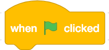

Statement Challenges
Challenge Scratch_to_Pyhon_00
In the first challenge, we respect the tradition by doing the "Hello, world!" program. In this challenge, we do not yet use the method of Player Learning, but follow the instructions to solve the challenge. The challenge is certainly easy to solve. The purpose is to explore the programming environment and how it works.
Instructions
- Click with the mouse on the white window in the block that says "Hi!".

- Enter the text "Hello, world!" In the white window you just selected.
- Drag the block with the mouse or finger and combine with the other block  .
- Click on the green flag above the scene.
Challenge 00
You come to the challenge either by clicking on the heading "Challenge 00" or on the picture of the challenge.
 Link to challenge Scratch_to_Python_00 file.
Link to challenge Scratch_to_Python_00 file.Video showing the solution to the Scratch_to_Python_00 challenge
Challenge Scratch_to_Python_01
Scratch 3.0 that came with Scratch contains new features. In this challenge we make a variation of the previous challenge and we get Pycat to speak the English text we have written. If you want the text to be changed to speech, add the "Text to Speech" extension, which has already been added to this task.
Instructions
- Click on the white window in the block that says "hello" with the mouse
 .
. - Enter the text "Hello, world!" In the white window you just selected.
- Pull the blocks together with your mouse or finger.
- Click on the green flag above the scene.
Challenge 01
You come to the challenge either by clicking on the heading "Challenge 01" or on the picture of the challenge.
Link to challenge Scratch_to_Python_01 file.Video showing the solution to the Scratch_to_Python_01 challenge
Challenge Scratch_to_Python_02
In this challenge, the task is getting Pycat to glide to the black hole as accurate as possible. In this task, the method of player learning is already applied to find the right coordinates.
Instructions
- In this task you need the help of coordinates. Put the correct coordinates in this block

- You run the code with the green flag and see how well it succeeds.
- Pycat returns to its starting position with space bar.
Challenge 02
You come to the challenge either by clicking on the heading "Challenge 02" or on the picture of the challenge.
Link to challenge Scratch_to_Python_02 file.